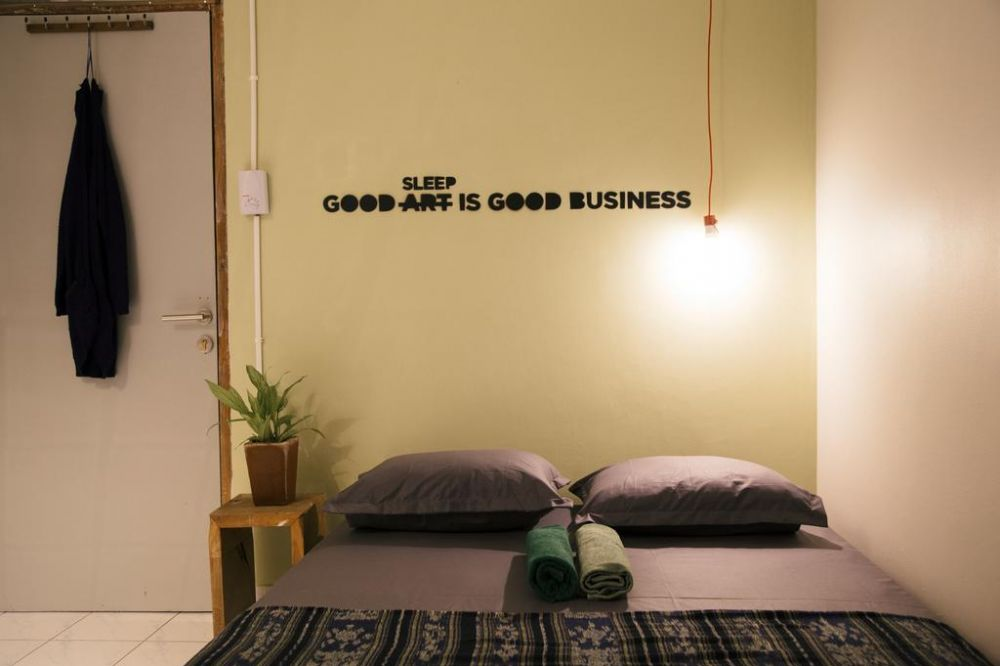
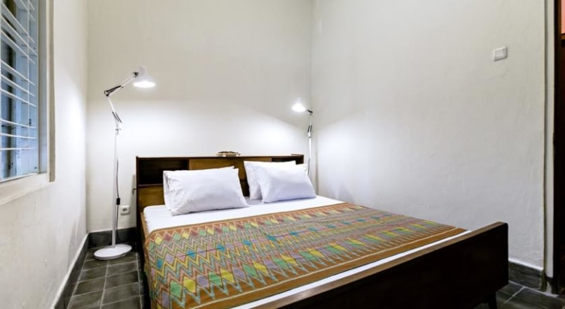
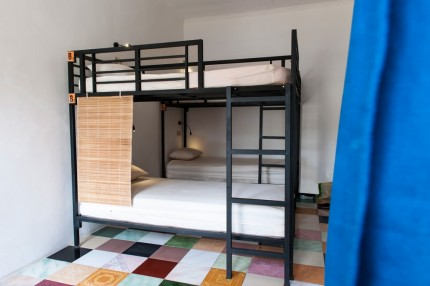
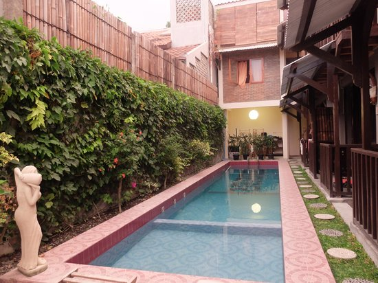
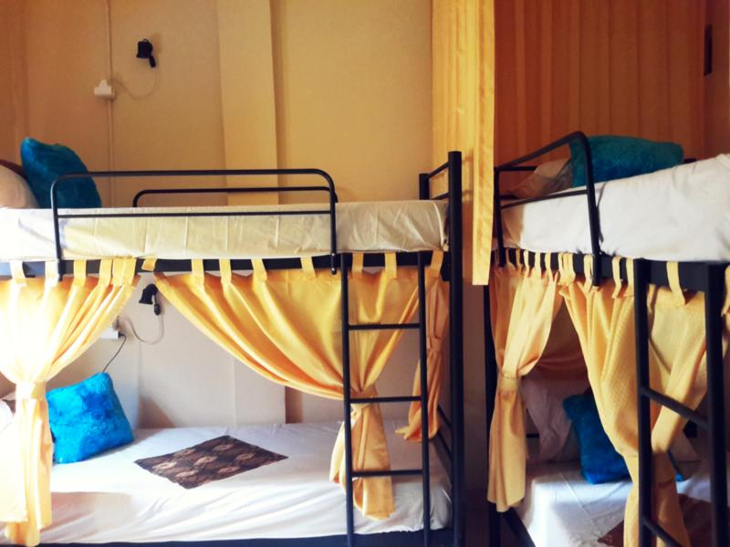

Beberapa Pilihan Penginapan di Jogja :
Sae Sae Hostel

Hotel ini berada di Jl. Ngadinegaran MJ III Gang Cempaka, Yogyakarta. Hotel ini mengangkat tema yang unik dengan gaya etnik yang Indonesia banget, selain unik, hotel ini juga murah banget, lho. Harga untuk sau kamar di Hotel ini adalah di kisaran Rp 50.000- Rp 95.000.
Bhumi Hostell

Hotel ini beralamat di Jl. Raden Ronggo no. 14, Lapangan Karang, Yogyakarta. Hotel ini sederhana namun nyaman bagi para wisatawan, disini kamu bisa bercengkrama dengan teman-teman kamu seperti serasa dirumah sendiri. Harga sewa kamar di hotel ini ada dikisaran Rp 50.000 hingga Rp 85.000 saja lho.
ViaVia Guesthouse

Hotel yang terletak di Jln. Prawirotaman 30, Yogyakarta ini bisa jadi salah satu pilihan tepat bagi kamu yang hendak berlibur ke Jogja. Pasalnya, kawasan Prawirotaman ini adalah salah satu kawasan Jogja yang paling unik. Disini terdapat banyak bar yang sering menampilkan live music tiap malamnya. Harga sewa guesthouse ini ada di kisaran Rp 60.000-Rp 100.000.
Venezia Garden

Hotel ini terletak di Jl. Surami No. 55, Yogyakarta. Hotel ini menyediakan berbagai fasilitas yang membuatmu nyaman seperti Wi-Fi gratis dan kolam renang di samping hotel. Harga sewa kamar hotel ini ada di kisaran Rp 50.000 hingga Rp 85.000.
Laura Backpackers

Hostel Laura Backpackers ini sangat cocok bagi kamu yang sedang traveling bersama teman-teman kamu. Hostel ini terletak di Gang Hansip Karnowaluyo no. 523, Tegalpanggung, Danurejan, Yogyakarta. Kisaran harga sewa kamar adalah Rp 60.000-Rp 100.000 saja.